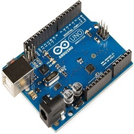
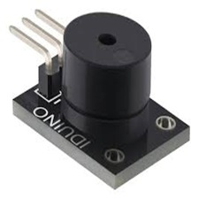
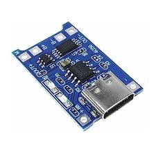

Proyecto de Innovación
Laboratorio de Innovación II

Semana 1
En la primera semana se realizó la introducción del curso, donde se explicó la estructura general, los temas a desarrollar en cada promedio y las actividades que llevaríamos a cabo a lo largo del ciclo.
Semana 2
En la semana 2 se conformaron los grupos de trabajo y se comenzaron a desarrollar las primeras propuestas del proyecto. Se planteó la creación de un producto que no solo aborde la problemática identificada, sino que también se integre de manera práctica y visualmente atractiva en la rutina diaria del usuario.
José Garcia
Estudiante de Ciencias de la Comunicación, lleva una vida activa, combinando estudios y actividades extracurriculares
Tambien vimos
En grupo analizamos la idea inicial de nuestro proyecto, definiendo qué queríamos diseñar y cuál sería nuestra propuesta principal. Durante este proceso, intercambiamos opiniones, evaluamos diferentes posibilidades y tomamos en cuenta las necesidades del usuario para llegar a una solución coherente y viable.
Descripción del Proyecto
Nuestra idea es crear un TermoInteligente que esté diseñadopara ayudar a las personas amonitorear e integrar tecnología avanzada con un enfoque en el bienestar.
Objetivo Principal
Fomentar un aumento significativo en la ingesta diaria de agua entre usuarios ocupados( estudiantes) mejorando su salud, bienestar y productividad.
Objetivo Especifico
Diseñar un termo inteligente,ergonómico, que sea visualmente atractivo y funcional. Crear una aplicación que permita registrar la ingesta de agua.
Semana 3
Se tomó la decisión final sobre el tema elegido, la solución que tendria este proyecto. Además vimos algunos materiales y componentes electrónicos. Se priorizó el uso de elementos accesibles, duraderos y compatibles con la tecnología propuesta.
PROBLEMATICA
Se realizó una investigación sobre los hábitos de hidratación en estudiantes universitarios, encuestando a 50 jóvenes de 18 a 24 años para identificar el problema donde iversos estudios advierten que hasta el 46.4% de los estudiantes universitarios presentan signos de deshidratación.
CONCLUSIÓN:
Los resultados confirma un problema de hidratación insuficiente, por ende este dato respalda la necesidad de implementar una solución tecnológica, como un termo inteligente que ayude a fomentar mejores hábitos de consumo de agua.

Arduino 1
S/40Plataforma de hardware libre utilizada para prototipado, es programablea través del software Arduino IDE.

Sensor de Nivel de Agua
S/20Sensor de humedad compatible con voltajes de 3.3V a 5V, fabricado en PCB con recubrimiento anticorrosivo.

Sensor de Ultrasonido
S/20Utiliza tecnología de ultrasonido para medir distancias, calculando el tiempo que tarda un pulso en reflejarse desde un objeto.

Pin LED
S/5Dispositivo semiconductor que emite luz alser energizado

Buzzer Pasivo
S/5Buzzer pasivo que permite controlar el tono del sonido generado. Funciona con un voltaje de 3.3V a 5V.

Bateria
S/20Batería recargable 18650 + Módulo de carga y entrada micro-USB (5V), salida 3.7V

Otros elementos
S/50Protoboard, montaje sin soldar, cables jumper, conexiones entre módulos y placa.

Semana 4
En la semana 4, se envió una encuesta a los estudiantes para conocer su nivel de hidratación y recoger información sobre los hábitos que podrían contribuir a la deshidratación. Los datos obtenidos nos permitieron sustentar la problemática y reforzar la necesidad de diseñar un termo inteligente como solución.
Semana 5
En la semana 5 se analizó los costos de los materiales, sensores y componentes electrónicos, con el objetivo de asegurar que la propuesta sea buena.